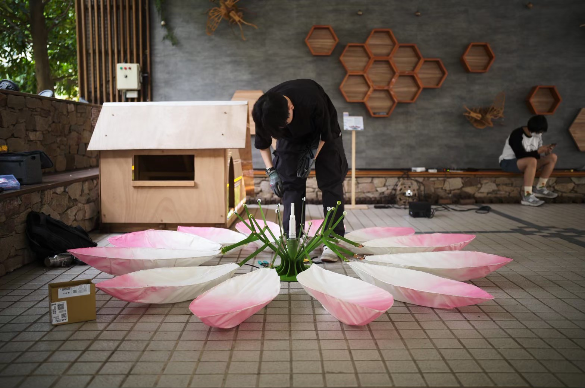

SPECIAL PROJECTS
藝術跨域創作（蓮花開小組）
專案介紹 (Introduction)
這是一門敝校大學部的通識課程，是要和校外的藝術家們合作，我負責的是機構設計的部分，從大家的概念構想到實際做出來真的很有成就感，雖然過程中因為不熟悉所以做的完整度不是很高，但是很開心有機會參加這門課程！

相關影片連結 (Relevant Links)
這部展演影片是由其他製作人出品的紀錄，您可以在此前往觀看：
這是一門敝校大學部的通識課程，是要和校外的藝術家們合作，我負責的是機構設計的部分，從大家的概念構想到實際做出來真的很有成就感，雖然過程中因為不熟悉所以做的完整度不是很高，但是很開心有機會參加這門課程！

這部展演影片是由其他製作人出品的紀錄，您可以在此前往觀看：